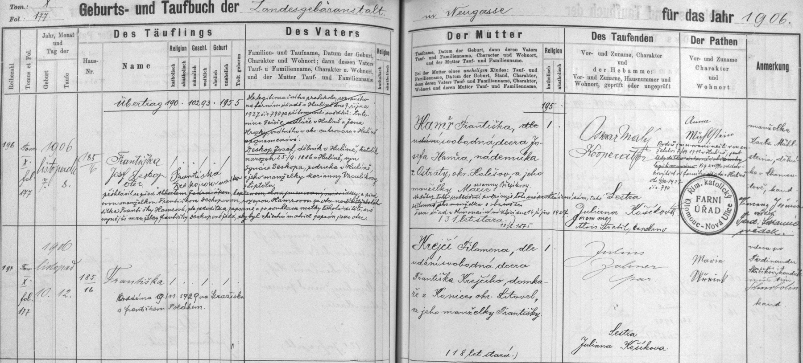

Text z matriky a překlad
Přepis originálu
Františka se narodila 10. 11. 1906 v zemské porodnici Olomouc–Nová Ulice a byla pokřtěna 12. 11. Matka Filomena Krejčí je výslovně osmnáctiletá svobodná dcera Františka Krejčího, domkáře z Konice, okres Litovel, a jeho manželky Františky. Otec dítěte je nevyplněn. Kmotra Marie Wěrník (?) je v poznámce označena jako vdova; příjmení a zbytek poznámky jsou nejisté. Pozdější přípisek potvrzuje sňatek s Františkem Polákem 9. 11. 1929 ve Strážisku. Číslo 185/16 patří porodnici, nikoli bydlišti rodiny. Křemenec zápis neuvádí.
Překlad
Františka se narodila 10. 11. 1906 v zemské porodnici Olomouc–Nová Ulice a byla pokřtěna 12. 11. Matka Filomena Krejčí je výslovně osmnáctiletá svobodná dcera Františka Krejčího, domkáře z Konice, okres Litovel, a jeho manželky Františky. Otec dítěte je nevyplněn. Kmotra Marie Wěrník (?) je v poznámce označena jako vdova; příjmení a zbytek poznámky jsou nejisté. Pozdější přípisek potvrzuje sňatek s Františkem Polákem 9. 11. 1929 ve Strážisku. Číslo 185/16 patří porodnici, nikoli bydlišti rodiny. Křemenec zápis neuvádí.